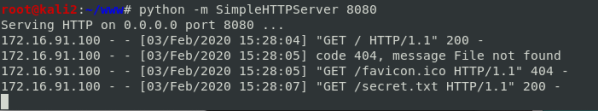
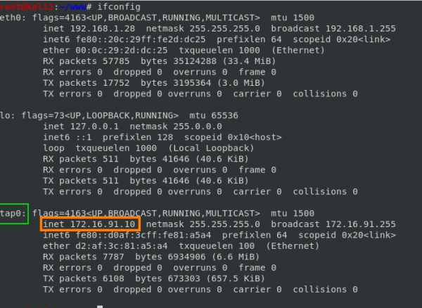

python server (Attacker)
Start a python server on the attacker machine(debian)
To set up a web server or serve our files quickly we can use
SimpleHTTPServer
python module
In the terminal we have to go in a directory(ex: /var/www) in the attacking machine where we have
files that we want have accessible via
browsers and HTTP
Than we run python’s
SimpleHTTPServer module, in this way we turn the actual directory
into a web server directory
python -m SimpleHTTPServer [port]
The
-m of the command stands for
module-namePorts below 1024
require root privileges, but running this command with root privilege is not a good idea, it is exposed at security
vulnerabilities
These are the
ports that we want to test:
80, 443, 8080, 8443, 53
| Port |
type of connection assigned |
used for |
| 80 |
TCP |
Hypertext Transfer Protocol (HTTP) |
| 8080 |
TCP |
Alternative port for HTTP |
| 443 |
TCP |
Hypertext Transfer Protocol over TLS/SSL (HTTPS) |
| 8443 |
TCP |
Apache Tomcat SSL,... |
| 53 |
TCP,UDP |
Domain Name System (DNS) service |
To access at the files we can simply open a web browser and go to http://[
your_ip_address]:[port] where “your_ip_address” is the IP of the
attacking machine(kali linux)
We choose the IPv4 of the
tap0 interface because we are attacking the Windows machine via VPN and so we are not in the
same network,
tap0 is our bridge to the network of the Windows
machine
